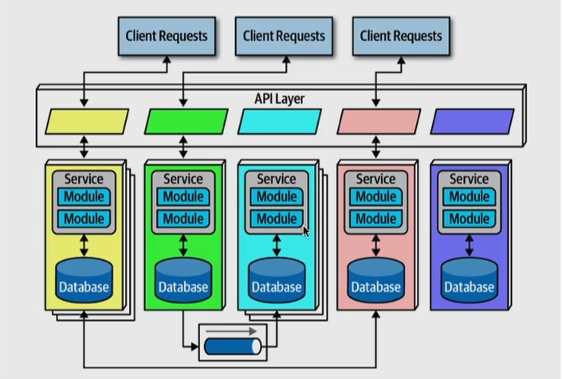

Estilo Baseado em Microsserviços
Estilo Baseado em Microsserviços
O estilo arquitetural baseado em microsserviços é uma abordagem para projetar sistemas de software em que uma aplicação é dividida em uma coleção de serviços independentes, conhecidos como “microsserviços”. Cada microsserviço é responsável por executar uma função específica do sistema e opera de maneira autônoma, tendo seu próprio banco de dados e API para se comunicar com outros microsserviços.
Essa arquitetura permite que uma aplicação seja construída e mantida de forma modular, com cada microsserviço desenvolvido, implantado e dimensionado separadamente. Cada serviço pode ser construído usando a tecnologia mais adequada para sua função, o que promove a flexibilidade e a escalabilidade. Além disso, a arquitetura de microsserviços facilita o desenvolvimento ágil, uma vez que equipes independentes podem se concentrar em microsserviços específicos.
 Algumas características comuns da arquitetura de microsserviços são:
-
Desacoplamento: Cada microsserviço é independente e não tem conhecimento dos detalhes internos dos outros serviços. Isso reduz o acoplamento entre os componentes do sistema.
-
Escalabilidade: Os microsserviços podem ser escalados individualmente, permitindo a adaptação às mudanças na demanda de tráfego ou processamento.
-
Facilidade de Manutenção: A manutenção e a atualização de um microsserviço podem ser realizadas sem afetar o funcionamento dos outros serviços.
-
Tolerância a Falhas: A falha em um microsserviço não deve impactar o funcionamento global do sistema. Isso promove a resiliência e a tolerância a falhas.
-
Diferentes Tecnologias: Cada microsserviço pode ser desenvolvido usando a tecnologia mais apropriada para sua tarefa, permitindo o uso de linguagens, frameworks e bancos de dados diferentes.
A arquitetura de microsserviços é particularmente adequada para sistemas complexos e de grande escala, como aplicativos de comércio eletrônico, plataformas de mídia social, sistemas financeiros e muito mais. No entanto, sua implementação exige uma cuidadosa consideração da comunicação entre microsserviços, da orquestração de serviços e da gestão de dados distribuídos.
Embora a arquitetura de microsserviços ofereça muitas vantagens em termos de escalabilidade e manutenção, também introduz desafios, como a complexidade da comunicação entre serviços e a necessidade de uma infraestrutura sólida para gerenciar a orquestração e a descoberta de serviços. Portanto, a decisão de adotar essa arquitetura deve ser cuidadosamente ponderada de acordo com as necessidades específicas do sistema e dos objetivos da organização.